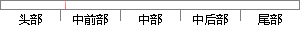

导电能力越强， VDS越大 ，漏极电流 ID相应 越大。
片段位置图

相似结果
相似片段：
子处于截止。如果在栅极和源极之间加一正向电压UGS，并且使UGS大于或等于管子的开启电压UT，则管子开通，在漏、源极间流过电流ID。UGS超过UT越大，导电能力越强，漏极电流越大。 二、电力场效应管的静态特性和主要参数 Power MOSFET静态特性主要指输出特性和转移特性，与静态特性对应的主要参数有漏极击穿电压、漏极额定电
| 对比库： | WriteCheck云资源库 |
| 来源： | ruida.org.cn 查看来源 |
| 发布时间： | 2012-11-12 |
| 相似率 | 63.16% （轻度抄袭） |